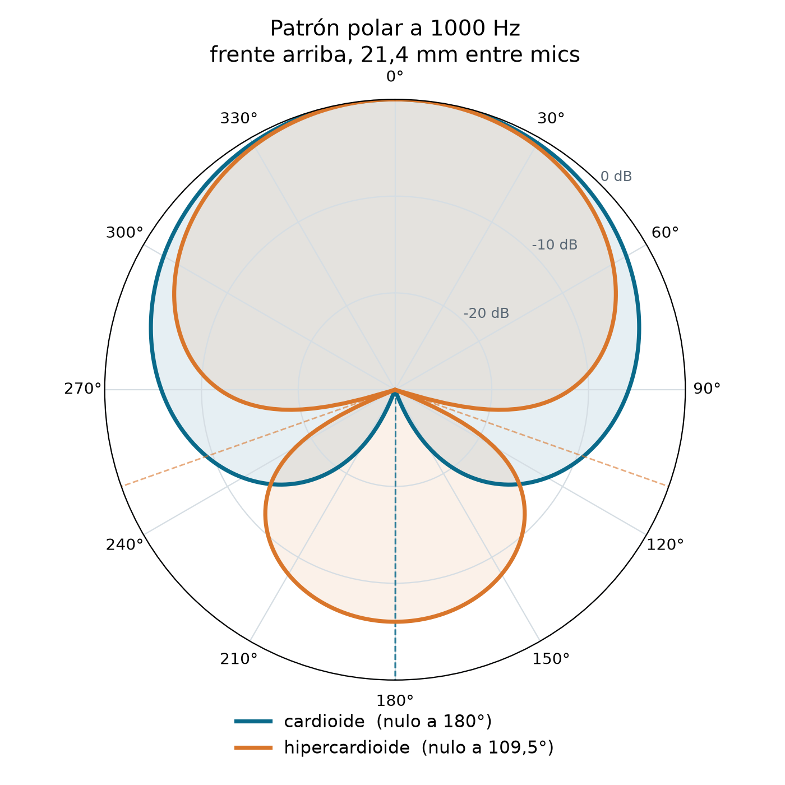
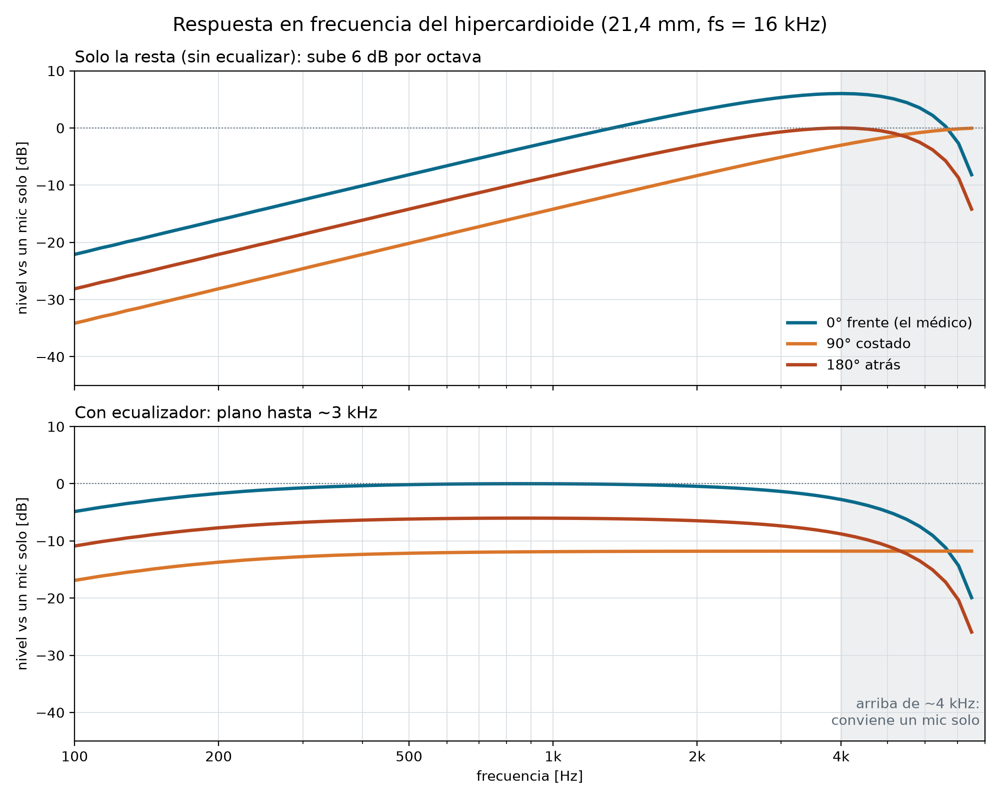

Array diferencial endfire de 2 mics
Resumen de consulta, en el orden en que se implementa la cadena: geometría, captura, calibración, pasaaltos, resta (hipercardioide), ecualizador y división en bandas. Al final: qué medir, los gráficos de la simulación en Python, el laboratorio polar y el apéndice.
La idea en resumen
Órbita tiene dos micrófonos. Promediarlos o hacer delay-and-sum no rinde nada: con mics a pocos centímetros, la voz llega casi igual a los dos desde cualquier dirección, y sumar no puede distinguir de dónde viene (lo medimos: ~0 dB).
Lo que proponemos es restarlos. Los dos mics se ponen en línea, uno adelante y otro atrás, separados 21,4 mm, que es la distancia que recorre el sonido en una muestra a 16 kHz. Se retrasa una muestra uno de los mics y se resta del otro: lo que llega justo sincronizado se cancela. Haciéndolo en los dos sentidos salen dos micrófonos virtuales cardioides, uno mirando adelante y otro atrás, y se combinan con un peso fijo (β = 0,5). El resultado es un micrófono virtual hipercardioide: el patrón más direccional que se puede lograr con 2 mics. Capta de frente, atenúa 12 dB los costados, tiene nulos a ~110° y deja un lóbulo chico atrás (−6 dB).
No hace falta saber dónde está quien habla: el filtro es fijo y la dirección la fija la geometría de la placa. Cuesta unas pocas operaciones por muestra.
La resta deja la voz con graves débiles y agudos fuertes, así que después va un ecualizador (un integrador con pérdida) que la vuelve plana y, de paso, corta los graves donde la resta más amplifica el ruido de los mics. Arriba de ~3 kHz se usa un mic solo, para no perder las consonantes.
Favorecer la voz del médico de frente contra todo el resto de la sala: ~6 dB contra el ruido difuso y la reverberación, que se mantienen hasta ~4 kHz. Cancelar el parlante no es el objetivo (atrás queda −6 dB). A cambio, los dos mics tienen que ser parejos (se calibran), la separación de 21,4 mm queda fija en la PCB, el ruido propio de los mics sube en graves y hay que definir cómo se apoya el equipo en el escritorio.
1Por qué diferencial y no delay-and-sum
Para separar direcciones, el delay-and-sum (DSB) necesita mics separados del orden de la longitud de onda (\(\lambda_{500\,\text{Hz}} = 69\ \text{cm}\)). Con mics a 2–5 cm, la onda llega casi en fase desde cualquier lado y sumar no separa nada: lo medimos, ~0 dB. Restar descarta lo común y se queda con la pequeña diferencia entre mics, que es lo que depende de la dirección (el gradiente de presión).
| Ruido difuso, 2 mics | 500 Hz | 1 kHz | 4 kHz |
|---|---|---|---|
| DSB, d = 21 mm | 0,0 dB | 0,1 dB | 0,9 dB |
| Cardioide, d = 21 mm | 4,7 dB | 4,7 dB | 3,0 dB |
| Hipercardioide, d = 21 mm (elegido) | 6,0 dB | 6,0 dB | 5,1 dB |
A cambio, el diferencial amplifica el ruido propio de los mics en graves, pide mics parejos y necesita ecualizar (pasos 4 a 9).
2La cadena completa
3Geometría: elegir d
Con una onda plana que llega con ángulo \(\theta\) desde el eje de los mics, el camino extra hasta el mic de atrás es la proyección de la separación sobre la dirección de la onda (cateto adyacente del triángulo de hipotenusa \(d\)):
Se elige \(d\) para que \(\tau_0\) valga exactamente 1 muestra: así el retardo del DSP es un \(z^{-1}\), sin interpolar.
- Se mide entre los agujeros acústicos (el INMP441 es bottom-port) y, con carcasa, entre sus aberturas. Los canales acústicos tienen que ser iguales.
- Tolerancia en décimas de mm: si \(d\) no da 1 muestra exacta, los nulos se corren y pierden profundidad.
- Mic 1 adelante, apuntando al médico; mic 2 atrás, sobre el mismo eje.
- Supone campo lejano (\(r \gg d\)): vale para voz a 0,5–2 m.
4Captura y calibración de los mics
Los dos mics en el mismo bus I2S (slots L y R), muestreados en el mismo frame: la sincronía entre canales está garantizada. Hay que fijar qué slot es el de adelante.
El nulo depende de que los mics sean iguales. Si el mic 2 tiene ganancia \(g = 1+\epsilon\), en el nulo queda un residuo \(|\epsilon|\) y la profundidad respecto del frente es
Ejemplo: 1 dB de diferencia (\(\epsilon \approx 0{,}12\)) a 500 Hz da un nulo de solo −10 dB. Por eso se calibra y se multiplica el mic 2 por \(1/g\) antes de restar.
Calibración con Goertzel
- Tono \(f_0\) desde 90° (de costado, donde la acústica no mete diferencia). Puede ser el propio parlante.
- Goertzel en \(f_0\) sobre los dos mics, sobre el mismo bloque de muestras.
- \(X_2[k]/X_1[k] = g\,e^{j\phi}\): diferencia de ganancia y de fase.
- Repetir en 300, 500 y 1000 Hz; guardar la corrección en NVS.
5Pasaaltos de entrada
Biquad Butterworth de 2º orden en ~70 Hz, idéntico en los dos mics (si no, mete diferencia de fase entre canales). Saca la DC y la energía de muy baja frecuencia: en las tomas mejoró la relación voz/total entre 0,4 y 13 dB sin tocar la voz.
Va sobre el dato de 32 bits antes de pasar a 16, con acumulador de mayor precisión que la muestra.
6Resta: el hipercardioide
La respuesta, de una
Se retrasa el mic de atrás \(T\) y se resta. La voz llega al mic de atrás con el retardo acústico \(\tau_0\cos\theta\) además del \(T\), así que el retardo total entre las dos señales es \(\Delta = T+\tau_0\cos\theta\):
Para ver el módulo se saca de factor la mitad del ángulo y se aplica Euler (\(e^{jx}-e^{-jx}=2j\sin x\)):
Es exacta: el primer factor es solo una fase. No hace falta aproximar nada para entender la respuesta.
Qué dice el seno
- Ceros en frecuencia. Valen cero cuando \(\omega\Delta/2 = k\pi\), es decir en \(f = k/\Delta\). El de \(k=0\) (continua) existe siempre. El primero de arriba es \(f = 1/\Delta\): el retardo total completa una vuelta entera de la señal y la resta se cancela.
- Cada ángulo tiene su respuesta. \(\Delta\) depende de \(\cos\theta\), de \(T\) y de \(d\) (por \(\tau_0 = d/c\)), así que el cero de arriba se mueve con el ángulo.
- Nulo en ángulo, exacto. Si \(\Delta=0\), \(H=0\) a todas las frecuencias a la vez. Eso pasa en \(\cos\theta_{\text{nulo}} = -T/\tau_0\).
- Máximo. \(|H|=2\) cuando \(\omega\Delta = \pi\).
Ejemplo con un solo retardo \(T=\tau_0\) = 1 muestra (\(d=21{,}4\ \text{mm}\)), que es el cardioide:
| Dirección | \(\Delta\) (muestras) | Primer cero (sin contar continua) |
|---|---|---|
| 0° (frente) | 2 | 8 kHz |
| 90° (costado) | 1 | 16 kHz, fuera de la banda |
| 180° (atrás) | 0 | nulo a todas las frecuencias |
Intuición: por qué la señal queda modulada por θ
Esto es una lectura de baja frecuencia, cuando el retardo \(\Delta\) es chico frente al período de la voz. Ahí una señal retrasada es casi la original menos su pendiente por el retardo (Taylor de 1er orden):
El mic de atrás, retrasado \(T\), recibe la voz con un retardo total \(\Delta = T + \tau_0\cos\theta\). Al restar:
- Lo común, \(s(t)\), es igual en los dos mics y no dice nada de la dirección: la resta lo elimina. La suma, en cambio, se queda con eso, y por eso no distingue direcciones.
- Lo distinto es el término chico que sobrevive, proporcional a \(T+\tau_0\cos\theta\): cuánto vale depende del ángulo. Ese factor es el que modula la señal con \(\theta\).
- Sale multiplicado por \(s'(t)\): la resta deriva la voz. Derivar es multiplicar por \(j\omega\) en frecuencia, y de ahí viene la pendiente de +6 dB/oct. El ecualizador (un integrador) deshace esa derivada.
Suma: \(s + s \approx 2s\), igual desde todas las direcciones. Resta: \(s - s(t-\Delta) \approx \Delta(\theta)\,s'\), un nivel que depende de la dirección.
Cuando \(\Delta\) deja de ser chico, \(s'\) ya no alcanza y vale la fórmula exacta de arriba: el seno se dobla y aparecen los ceros.
El hipercardioide: dos cardioides y un peso
Con un solo retardo, el hipercardioide pediría \(T=\tau_0/3\), un tercio de muestra. Habría que interpolar con un filtro de retardo fraccionario, que cuesta CPU y deforma los agudos. Por eso no se hace así. Todo patrón de primer orden es una mezcla de omni y figura-8, y dos cardioides opuestos dan justo esas dos piezas: su suma es omni y su resta es figura-8. Con ellos el patrón se elige con un peso \(\beta\) (una multiplicación) y los únicos retardos son de una muestra entera.
Con \(u=\omega\tau_0\cos\theta\) y \(v=\omega T\) (\(T\) = 1 muestra), la respuesta exacta es
Con \(\tau_0 = T\) (1 muestra) se simplifica en tres direcciones:
| Dirección | \(|H|\) | Ceros |
|---|---|---|
| 0° (frente) | \(2\,|\sin v|\) | continua y 8 kHz |
| 90° (costado) | \(2(1-\beta)\,|\sin(v/2)|\) | continua y 16 kHz (fuera de banda) |
| 180° (atrás) | \(2\beta\,|\sin v|\) | continua y 8 kHz |
Lo clave: de frente, \(c_B\) da cero (la voz llega sincronizada a sus dos términos). La voz del médico sale igual que con un cardioide, y \(\beta\) solo cambia lo que llega de otras direcciones. Por eso el ecualizador y la división en bandas son los mismos.
Precio: de frente la salida es \(2|\sin(\omega\tau_0)|\), una pendiente de +6 dB/oct a baja frecuencia (−22 dB en 100 Hz, ~0 dB en 1,3 kHz, +6 dB en 4 kHz) y un cero en \(c/(2d) = 8\ \text{kHz}\). Lo corrige el paso siguiente.
Cómo se eligió β = 0,5
Esta es la única parte que usa una aproximación, y solo sirve para elegir \(\beta\). Para comparar patrones hace falta una forma que no dependa de la frecuencia, y eso solo existe a baja frecuencia, donde \(\sin x \approx x\) (\(\omega\Delta \ll 1\)). Ahí \(c_F \propto 1+\cos\theta\), \(c_B \propto 1-\cos\theta\), y
Queremos favorecer al médico de frente contra el ruido y la reverberación, que llegan de todas las direcciones. Eso lo mide la directividad (frente contra el promedio sobre todo el espacio):
Derivando e igualando a cero, \(2\alpha - \tfrac23(1-\alpha) = 0\), el máximo está en \(\alpha = \tfrac14\), o sea \(\boxed{\beta = 0{,}5}\). Es el hipercardioide, con DF = 4 (6,0 dB), el máximo posible con 2 mics.
| Dirección | \(\cos\theta\) | \(B(\theta)\) | En dB |
|---|---|---|---|
| 0° (frente) | 1 | 1 | 0 dB |
| 90° (costado) | 0 | ¼ | −12 dB |
| 109,5° | −⅓ | 0 | −∞ (nulo) |
| 180° (atrás) | −1 | −½ | −6 dB (lóbulo trasero, polaridad invertida) |
| Patrón | β | Nulo | DF | Uso |
|---|---|---|---|---|
| Cardioide | 0 | 180° | 4,8 dB | Anular una fuente fija atrás (parlante) |
| Supercardioide | 0,27 | 125° | 5,7 dB | Máxima relación frente/atrás |
| Hipercardioide (elegido) | 0,5 | 109,5° | 6,0 dB | Máximo rechazo de la sala |
| Dipolo | 1 | 90° | 4,8 dB | Rechazar los costados |
"Hiper" porque es más direccional que el cardioide: haz de ~105° a −3 dB contra ~131°, y −12 dB a los costados contra −6 dB. Arriba de ~2 kHz el patrón se deforma respecto de esta tabla, como muestran el gráfico de arriba y el laboratorio polar.
7Ecualizador
Filtro con la pendiente opuesta (−6 dB/oct, \(\propto 1/\omega\)) para dejar plana la voz de frente: un integrador. Como \(c_B\) es cero de frente, la voz del médico a la salida del hipercardioide es la misma que la de \(c_F\). Con \(\tau_0\) = 1 muestra, queda \(1-z^{-2} = (1-z^{-1})(1+z^{-1})\), y el integrador cancela el primer factor:
| Frente después del ecualizador | 0 | 2 kHz | 4 kHz | 6 kHz | 8 kHz |
|---|---|---|---|---|---|
| Ganancia | 0 dB | −0,7 dB | −3,0 dB | −8,3 dB | −∞ |
Un integrador puro tiene ganancia infinita en 0 Hz y se satura con la DC. Se usa uno con pérdida (pasabajos de 1er orden con corte \(f_c\) bajo):
- Arriba de \(f_c\): integra y compensa la resta.
- Debajo de \(f_c\): ganancia plana, así que la pendiente de la resta queda sin compensar y la cadena se comporta como un pasaaltos natural en \(f_c\). Eso corta la zona donde el ruido propio es peor, sin filtro extra.
- El acumulador \(v[n]\) crece más que la muestra: llevarlo en 32 bits o float.
- Devuelve el color de la voz, no la SNR en graves: sube por igual la voz y el ruido propio.
8División en bandas
Arriba de ~3 kHz la aproximación de array chico deja de valer y el frente cae (tabla anterior). Para no perder consonantes:
- Debajo de ~150 Hz: lo corta el ecualizador.
- ~150 Hz – 3 kHz: hipercardioide. Ahí está casi toda la energía de la voz y el patrón es estable.
- Arriba de 3 kHz: mic 1 solo. Sin directividad, pero las consonantes quedan intactas.
El hipercardioide mantiene la directividad hasta más arriba que el cardioide (5,1 dB a 4 kHz, paso 9), así que el cruce se podría subir a ~4 kHz. Lo que lo limita es la caída del ecualizador de frente (−3 dB en 4 kHz).
El par LPF/HPF tiene que sumar plano en el cruce (filtros complementarios o Linkwitz-Riley), y hay que compensar el retardo de ½ muestra que agrega \(\tfrac12(1+z^{-1})\). Para la primera prueba se puede omitir este paso y escuchar.
9Costos y límites
Directividad según la frecuencia
El patrón es estable mientras el array es chico; en agudos se degrada. El hipercardioide aguanta más:
| DF (d = 21,4 mm) | 200 Hz | 1 kHz | 2 kHz | 3 kHz | 4 kHz | 6 kHz |
|---|---|---|---|---|---|---|
| Cardioide | 4,8 | 4,7 | 4,4 | 3,9 | 3,0 | −0,8 |
| Hipercardioide (β = 0,5) | 6,0 | 6,0 | 5,8 | 5,6 | 5,1 | 2,9 |
Ruido propio (white noise gain)
El ruido de cada mic es independiente (potencia \(\sigma^2\)). En \(y_h = c_F - \beta c_B\), cada mic aparece dos veces: \(y_h = x_1\,(1+\beta z^{-1}) - x_2\,(z^{-1}+\beta)\), con \(z^{-1}\) el retardo de una muestra. La potencia de ruido depende de la frecuencia:
En graves vale \(2(1+\beta)^2\sigma^2 = 4{,}5\,\sigma^2\) y en 8 kHz, \(2(1-\beta)^2\sigma^2 = 0{,}5\,\sigma^2\). La voz de frente pasa con \(|H|^2 = 4\sin^2(\omega\tau_0)\), igual que en el cardioide, porque \(c_B\) es cero de frente. Frente a un mic solo:
| \(f\) | 200 Hz | 500 Hz | 1 kHz | 2 kHz | 4 kHz |
|---|---|---|---|---|---|
| Hipercardioide (β = 0,5) | −22,6 dB | −14,7 dB | −8,7 dB | −2,9 dB | +2,0 dB |
| Cardioide (referencia) | −19,1 dB | −11,2 dB | −5,3 dB | 0,0 dB | +3,0 dB |
| Diferencia (hiper − cardioide) | −3,5 dB | −3,5 dB | −3,4 dB | −2,9 dB | −1,0 dB |
En graves el hipercardioide tiene 3,5 dB más de ruido propio que el cardioide, y la diferencia baja a ~1 dB en 4 kHz. Es el precio de los +1,2 dB de directividad. La fórmula coincide con una simulación de ruido blanco independiente en cada mic, dentro de ~0,15 dB. Que se escuche depende del ruido de la sala: si el ruido propio amplificado queda debajo del ruido ambiente, no empeora nada. Medir el ruido de un mic crudo no alcanza: hay que medirlo después de la cadena completa.
Otros límites
- Haz ancho: ~105° a −3 dB. Favorece al médico contra la sala, pero no lo aísla; para un haz más angosto harían falta más mics.
- Dos hablantes: con el eje apuntando al médico, el paciente queda de costado (−12 dB) o atrás (−6 dB). Si hay que captarlo, revisar la orientación.
- Diferencia entre mics: llena los nulos, sobre todo en graves (paso 4).
- El parlante, si queda atrás, pasa a −6 dB: el AEC sigue haciendo todo el trabajo.
Dos restas, una multiplicación, integrador y ÷2: unas 6 operaciones por muestra. Con el pasaaltos y el crossover, menos de ~30. Despreciable para el ESP32-S3 frente al AFE y la wake word.
10Qué medir y criterio
- Mics pegados a una regla a 21,4 mm, en endfire. Modo UART, AFE apagado.
- Tomas de 8 s: voz de frente, la misma voz de costado (90°), voz de frente con ruido o música de costado, y una de silencio para el ruido de fondo.
- Offline: pasaaltos → hipercardioide → ecualizador. Medir el rechazo frente/costado, la respuesta de frente (±3 dB entre 200 Hz y 6 kHz con división en bandas), la SNR con ruido contra un mic solo y el ruido de fondo después de la cadena.
- Como cardioide, hiper y dipolo son el mismo código con distinto β, conviene probar los tres sobre las mismas tomas.
Al menos ~8 dB de rechazo de la fuente de costado en 300 Hz – 3 kHz (la teoría da 12) y una mejora de SNR con ruido de sala de al menos ~3 dB contra un mic solo, sin que el ruido de graves amplificado se escuche. Si no se llega, se descarta.
11Simulación en Python: los gráficos
Salen de tools/lab_cardioide.py (rama prueba-hipercardioide): simula tonos que llegan a los 2 mics desde distintos ángulos, aplica la cadena del paso 6 (cardioides \(c_F\) y \(c_B\), peso β) y el ecualizador del paso 7, y mide el nivel de salida. Se verificó contra la fórmula en frecuencia: error máximo 0,000 dB. Para regenerarlos: python tools/lab_cardioide.py.


| A 1 kHz, relativo al frente | Cardioide (β = 0) | Hipercardioide (β = 0,5) |
|---|---|---|
| Costado (90°) | −5,9 dB | −11,9 dB |
| Atrás (180°) | nulo (cero exacto) | −6,0 dB |
| Nulo del hiper (109,5°) | — | −50,7 dB |
El nulo del hipercardioide llega a −50,7 dB y no a −∞: la teoría de array chico predice un cero, el cálculo exacto lo deja un poco por encima.
12Laboratorio polar
La cadena que se implementa (paso 6): dos cardioides con retardo de una muestra entera y el peso β, en fórmula exacta y con diferencia de ganancia entre mics. Con d = 21,4 mm es lo que corre el firmware; cambiar d muestra qué pasa si la PCB no respeta la distancia. Escala radial: 0 a −30 dB respecto del frente.
- Nulo (mínimo en 0–180°)
- Directividad DF
- WNG (vs ruido propio, 1 mic)
- Primer cero de frente
13Apéndice
Suma contra resta: el mismo beamformer con distinto peso
Con 2 mics, todo beamformer es \(Y(\omega) = \tfrac12\big[X_1 + w(\omega)\,X_2\big]\). El delay-and-sum visto en clase (multiplicar el bin de la DFT por una fase) usa \(w = e^{+j\omega\tau}\); el diferencial, \(w = -e^{-j\omega T}\).
Con \(\omega\tau_0\ll1\) el DSB vale casi 1 desde cualquier dirección y no separa nada. En el diferencial el argumento del seno sí depende del ángulo.
- La fase tiene que ser lineal en \(\omega\) (\(\varphi = \omega\tau\)). Una fase constante sirve solo para banda angosta: con voz, el haz apunta a otro ángulo en cada frecuencia.
- Un solo bin (Goertzel) sirve para medir o calibrar, no para reconstruir la señal: para eso hacen falta todos los bins (FFT + overlap-add).
- En frecuencia, el retardo fraccionario sale gratis; el costo es la latencia de un bloque.
Versión adaptativa (Elko & Pong, 1995)
El hipercardioide del paso 6 es esta misma estructura con \(\beta = 0{,}5\) fijo. Si el ruido no viene siempre del mismo lado, \(\beta\) se puede adaptar para mover el nulo por el semiplano de atrás:
De frente la ganancia es 2 para cualquier \(\beta\), así que minimizar la potencia de salida solo puede anular lo de atrás:
El ecualizador del paso 7 va después de \(y[n]\), igual que en el hipercardioide fijo.